Variance Release History
New to 1.8 (Feb 06 2016)
- Brand new chord engine : 40x faster than before (886 seconds to 22 seconds for 32.5k cases).
New to 1.7 (Jan 08 2016)
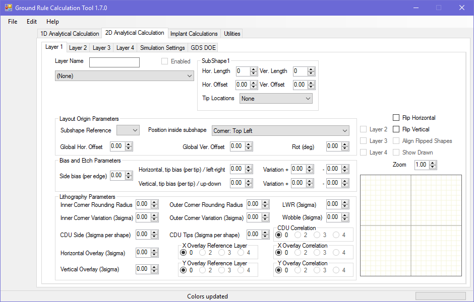
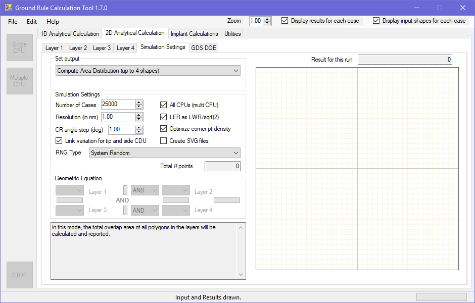
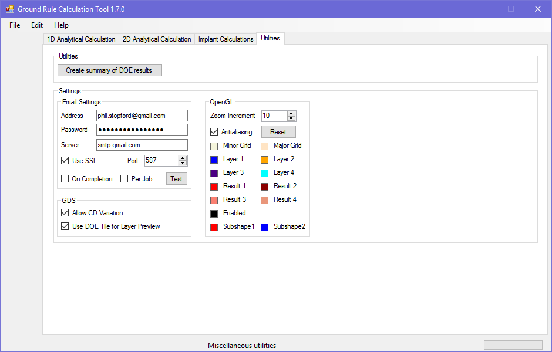
- Grid colors now configurable.
- Hyperthreading is now always used. No negative effects were observed, and removal of the option simplified cross-platform support.
- Overlap evaluation improved :
- The tool now provides an option to use shortest edge for raycast source; makes arbitrary configurations usable.
- Overlaps in enclosure mode are properly handled.
- Validated 50k runs without hang-up using Mono 4.2.2.10 and Xamarin.Mac 2.4.1.5, but still sporadic fails in the Mac build. Postponing Mac work for now.
- Support for re-ordering layers in simulation, making it easier to fix misconfiguration.
- Windows GUI now has keyboard shortcuts.
- Layer preview panels now support background layers.
- See the contours from enabled layer(s) in your current layer, to ease set-up.
- Simplifications to the distance handler.
- Simplifications to the fragmenter.
- Simplifications to the layer settings handling (pasting, etc.) that eased re-ordering implementation.
- Minor tweaks to avoid iterating lists without benefit.
- Various bug fixes.
- GDI fallback removed - difficult to maintain and OpenGL viewports are superior.
New to 1.6 (Dec 03 2015)
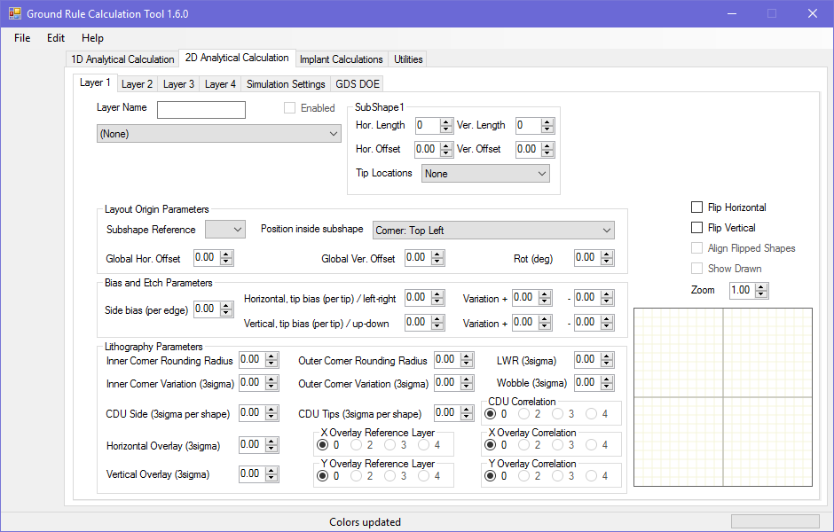
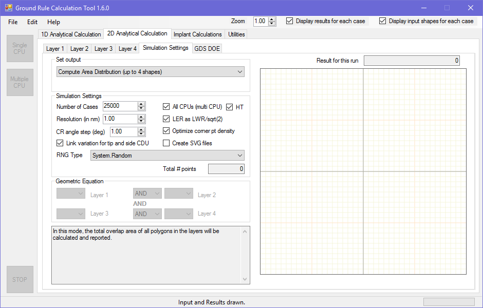
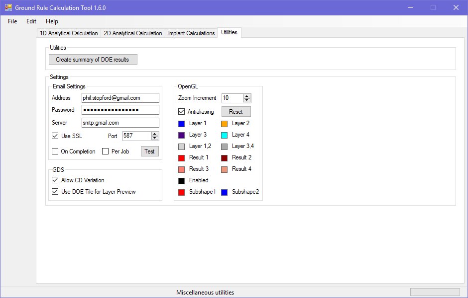
- Summary file saved first, allowing user to review results whilst waiting for (or aborting) the SVG/CSV stages.
- Refined the settings panel to reduce clutter and expand the help pane, also improving the Mac experience.
- Ability to cancel lengthy GDS file loads.
- Headless interactive now supports GDS layer property modification.
- Activity indicators for GDS processing to show application is working.
- Viewport 2.0 : migrated from immediate mode OpenGL to VBO. Better performance and more robust when faced with larger datasets.
- Long-awaited legacy project load support - missing or invalid values will be set to defaults.
- Replacing problematic core code use of System.Drawing with replacement components (Point, PointF, Color) to improve portability.
- Windows retains GDI viewport implementation and use of System.Drawing in GUI code as needed.
- Non-Windows GUI required native replacements for others (e.g. Size, SizeF, RectangleF).
- Mac port continues to mature.
- Performance very close to Windows due to framework fixes.
- Xamarin.Unified migration completed.
- Single-threaded performance matches Windows build.
- Performance improvements from improved locking and data management.
- UI responsiveness improved with large GDS inputs
- Single-threaded : 10-20% over 1.5
- Multi-threaded : 20-33% over 1.5
- 10-33% memory reduction for large GDS datasets over 1.5
New to 1.5 (Oct 16 2015)
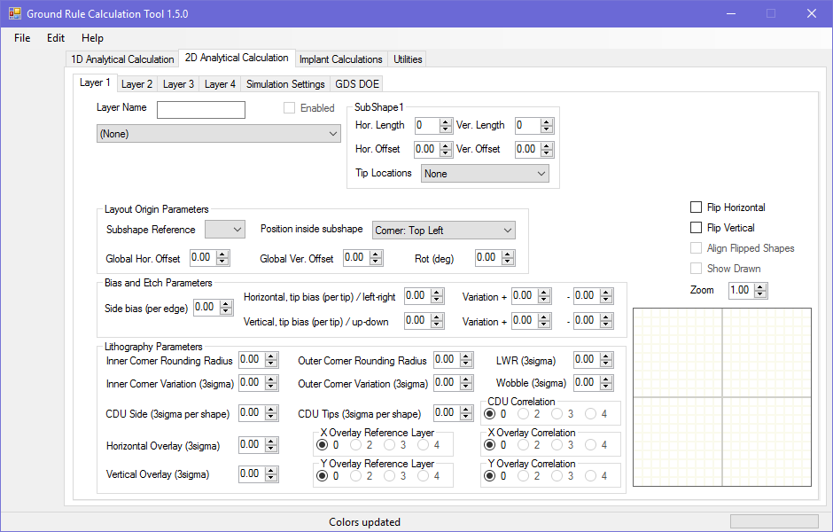
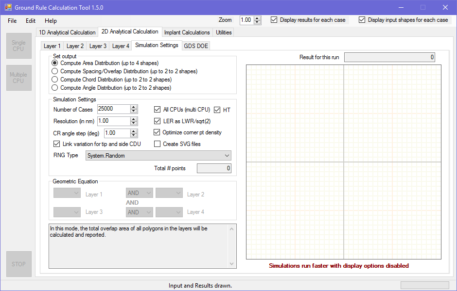
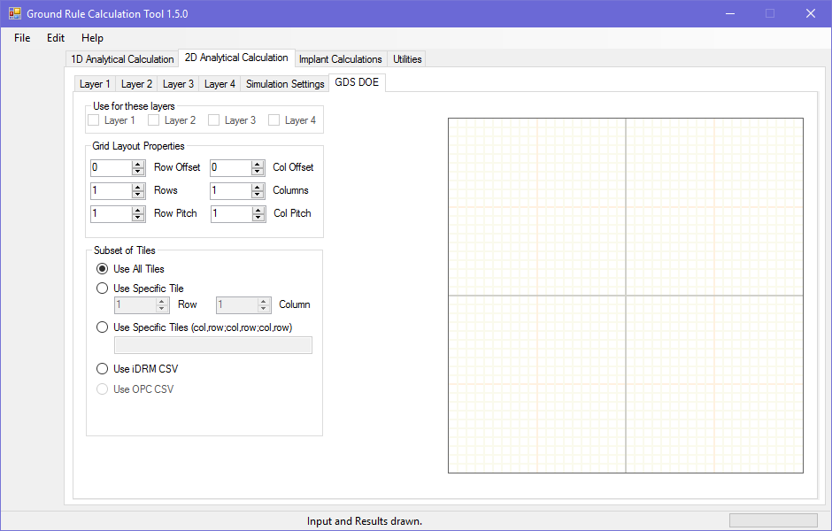
This update was far more extensive than originally planned and so took longer to complete.
- Performance improvements (over 60x, based on benchmarking) compared to 1.4, increasing gains with large runs.
- Preference setting for layer preview geometry for GDS DOE (all layout or just the extracted tile)
- Preference setting for CD variation of GDS geometry
- Loading of projects using variation with GDS geometry will request user input when user preference set to disable
- Rotational variation (wobble) for non-GDS geometry
- Ability to flip shapes :
- Horizontally and/or vertically
- Optional re-positioning with centerpoint of original geometry
- Live preview of the GDS DOE configuration through a new viewport
- Experiments in GUIs for non-Windows (source package)
- GTK# : stalled by GL control support problems in Mono/GTK# frameworks.
- Qt : UI shell drawn-up, but QtSharp infrastructure not available to utilize (yet)
- Mac port.
- Native user interface
- MonoMac used to exploit existing C# codebase
- OpenGL viewports (no GDI implementation)
- Still has performance issues
- Continuing work on the interactive system:
- Able to set layer settings, job settings
- Documentation
- Optimized XML generation (code simplification; no end-user change)
- VS 2015 projects.
- Overhauled viewport engine:
- Adjustable zoom increment for mouse wheel.
- Customizable colors across-the-board.
- New and improved OpenGL viewport system using OpenTK
- OpenTK is better supported by the developers - SharpGL has stalled.
- Robust multi-platform code.
- More straightforward to use - it's now trivial to add new viewports (see the new GDS DOE preview)
- Bug fix to the parallel 'greedy' approach.
- E-mail notification support on job and/or batch completion.
New to 1.4 (Jul 23 2015)
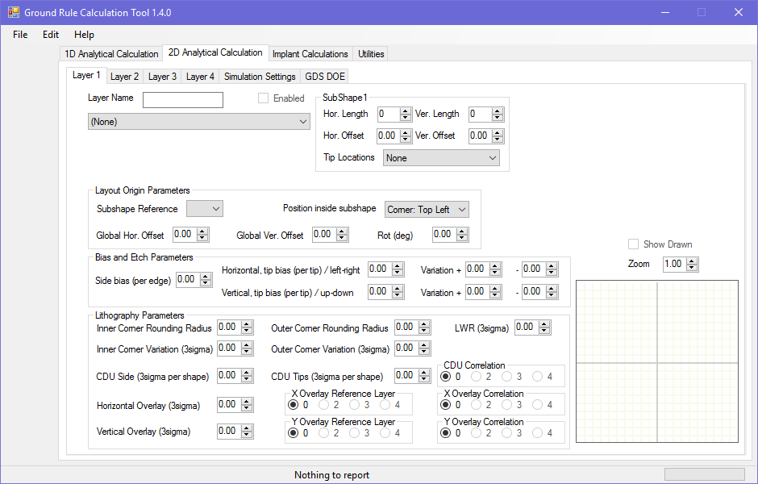
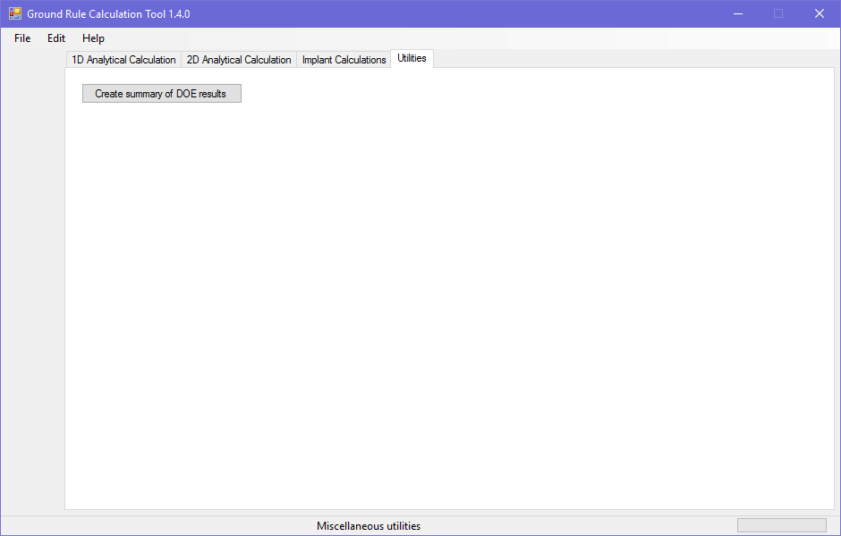
- Boolean system reworked to consider full layer contents (1, 2)/(3, 4) rather than individual polygons.
- Calculation engine adjusted to respect full/per-poly requirements of different calculation systems.
- Tile extraction improved to cope with overlapping geometry.
- DOE summary generation.
- DOCX replaced by HTML pages. Help now accessible from menu.
- Interactive headless mode.
- Migrated OpenGL viewports from DIB to FBO - improved drawing and hardware acceleration.
- Shape bias and CDU for GDS data.
- Refactored code.
New to 1.3 (Jun 24 2015)
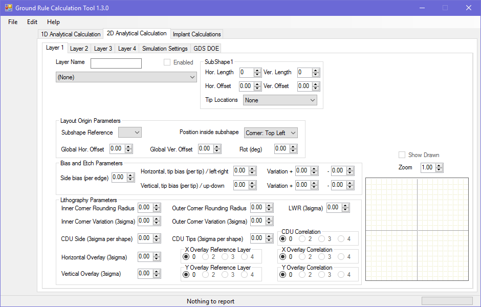
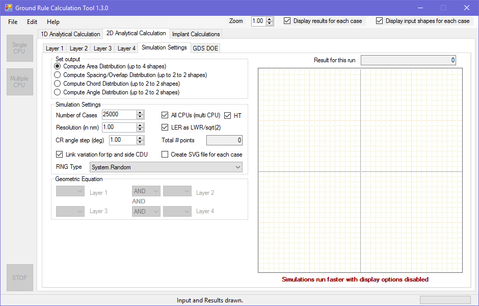
- Dropped VS2010 support, to target .NET 4.5 only.
- Corner optimization in shape engine to avoid packing points too closely in corners. Highly experimental and needs proving.
- Restored GDI viewport mode as an option (--gdiViewPorts).
- Added headless mode for terminal usage (--headless), along with a truly headless and portable build of the tool for non-Windows platforms.
New to 1.2 (Apr 08 2015)
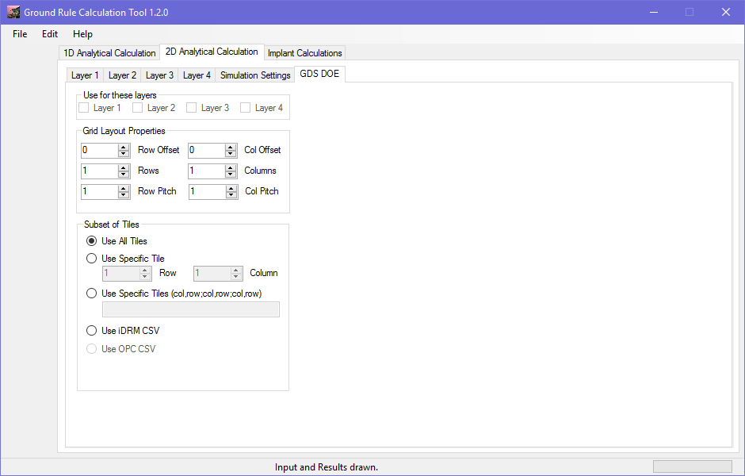
- X and Y overlay correlation layers rather than a single combined correlation layer.
- X and Y overlay reference layers rather than a single overlay reference layer.
- Toggle to choose how LER is derived from LWR.
- Cross-shape overhaul and fixes.
- Issues warning if the user has a calculation involving many polyons in the simulation settings panel.
- Reworked random number infrastructure to avoid program issues.
- OpenGL viewport performance enhancements.
- Stability improvements.
New to 1.1 (Mar 31 2015)
- iDRM CSV parsing for GDS DOE, to select only passing tiles for GDS DOE evaluation
- Major performance improvement for tile-based calculations with overhaul to tile extraction methodology.
- Arbitrary tip definitions on subshapes.
- Single overlap value reporting.
- Overlay reference system.
- Preview panels reimplemented using OpenGL instead of GDI.
- Preview panels support mouse drag/mouse wheel zoom/hotkeys
- Mean/stddev readout during simulation runs.
- Summary file output.
New to 1.0 (Feb 18 2015)
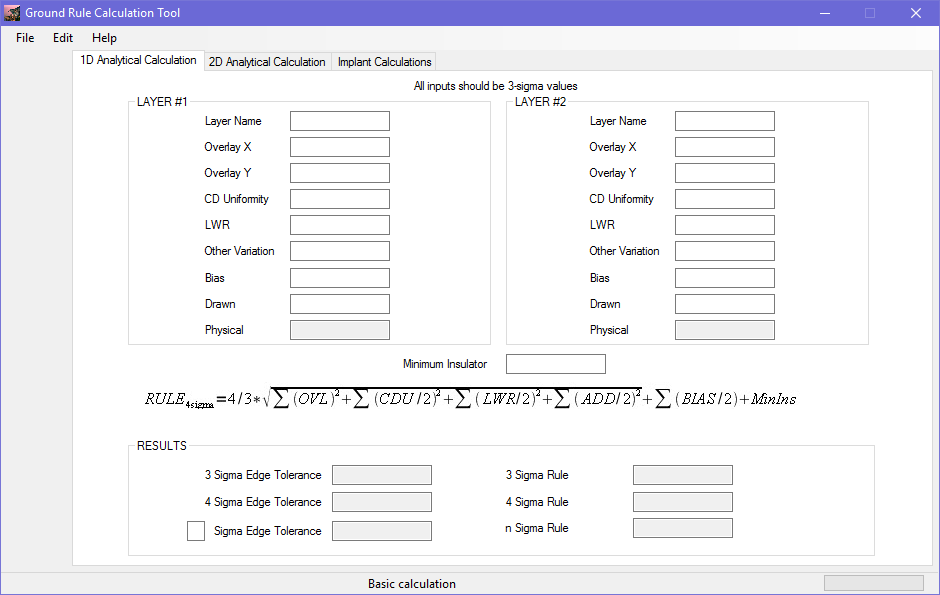
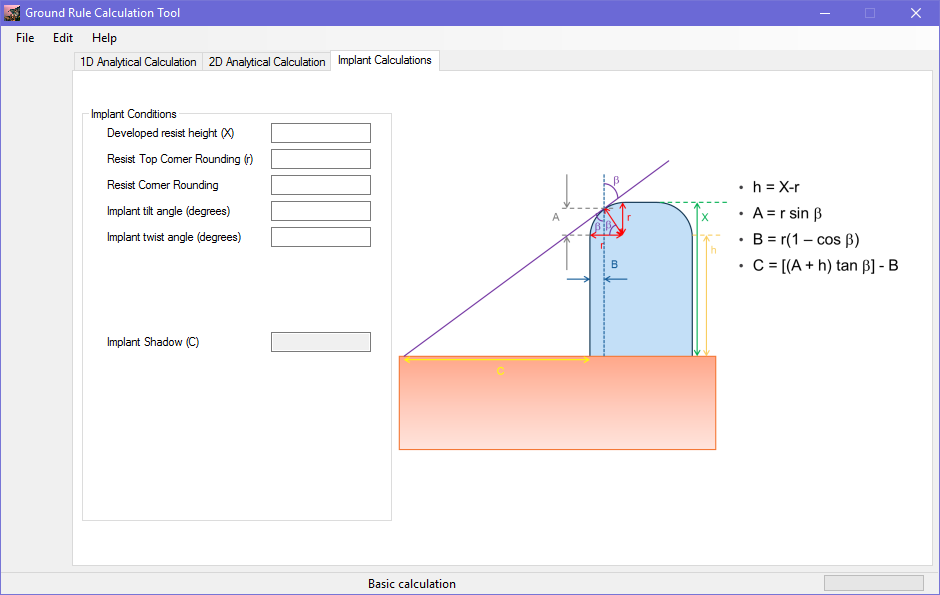
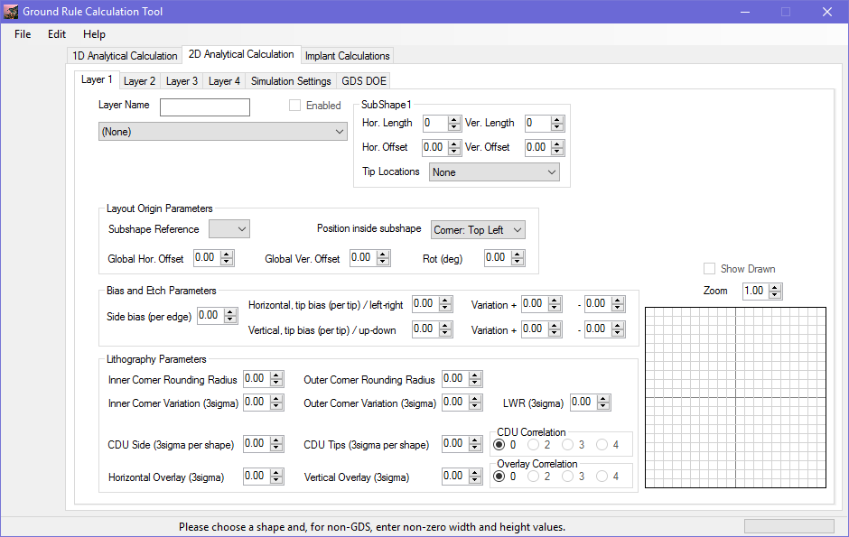
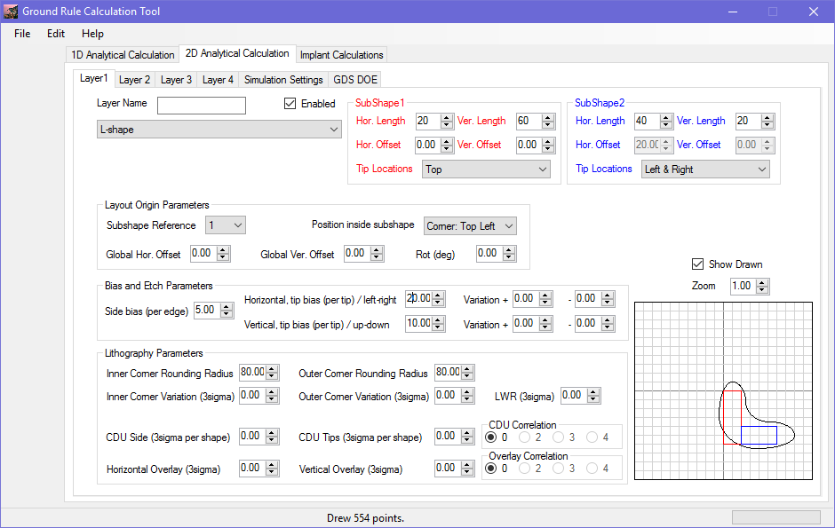
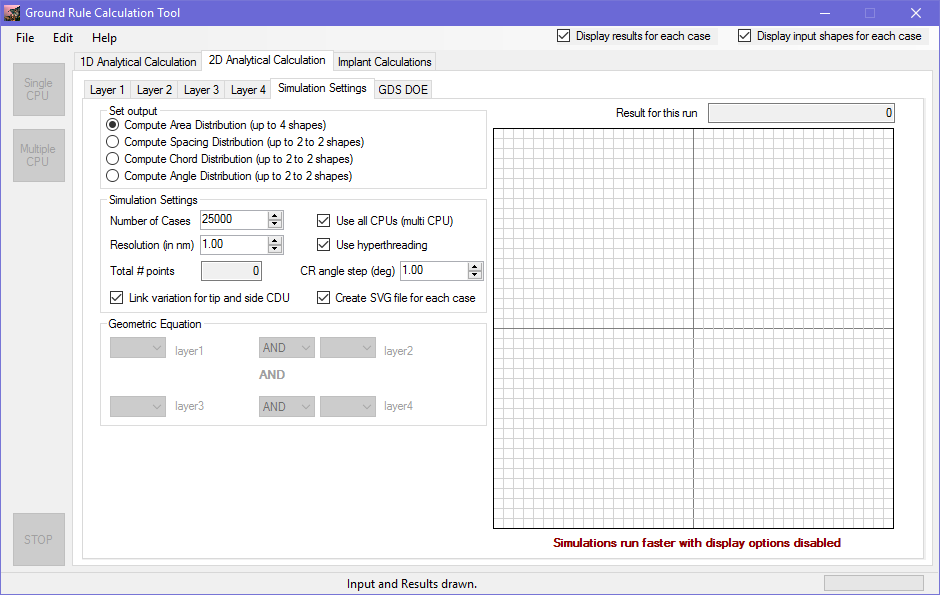
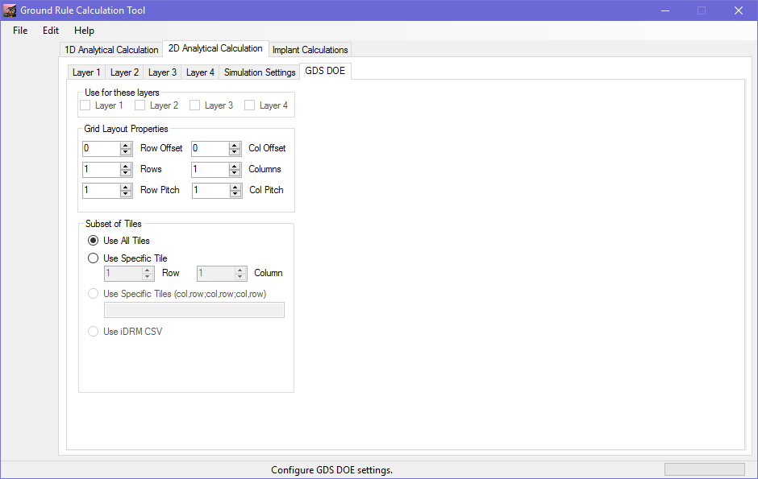
- First release following 4 months intensive development and QA.
Dev builds
- 0.9.0 : Feb 05 2015
- Store GDS point data in XML files
- Chord refinements.
- 0.5.0 : Feb 02 2015
- Bug hunt.
- 0.1.0 : Jan 27 2015
- Distance handler supports overlaps (X and Y values reported).
- Chord engine stabilization.
- Chord selection options added.
- XML save/load of project files.
- Multithreaded batch calculations.
- Intersection angle marker refinements.
- Optimizations and fixes.
- 0.0.7 : Jan 15 2015
- Chord engine work.
- UI refinements and optimizations (repaint reduction).
- 0.0.6 : Jan 06 2015
- Initial intersection angle engine.
- Initial GDS DOE implementation.
- UI lockout during runs.
- Started work to support multithreading of batch calculations.
- GDS implementation overhaul for internals and UI.
- Ongoing fixes and optimizations.
- ShapeLibrary implemented to push definition code into a more obvious location.
- U-shape enabled.
- 0.0.5 : Dec 09 2014
- Copy/paste of layer settings.
- GDS parser.
- Results class implemented.
- SVG writer for inputs/outputs to calculations.
- Job preflight engine.
- Initial chord engine.
- Initial distance engine for spacing/enclosure.
- Correlation of overlay/CDU.
- Many fixes and optimizations.
- Shape engine work for LWR and corner definition.
- Tooltips in UI
- 0.0.3 : Nov 03 2014
- Batch calculation engine (single threaded).
- CSV writer for results.
- Layer tone inversion (single polygon).
- 0.0.2 : Oct 27 2014
- Basic area calculation using clipperLib.
- Shape engine tuning.
- 0.0.1 : Oct 23 2014.
- Basic prototype GUI with viewports enabled.
- 1D and implant calculations.
- Initial shape engine.
- RNG implementation including Gaussian distribution.